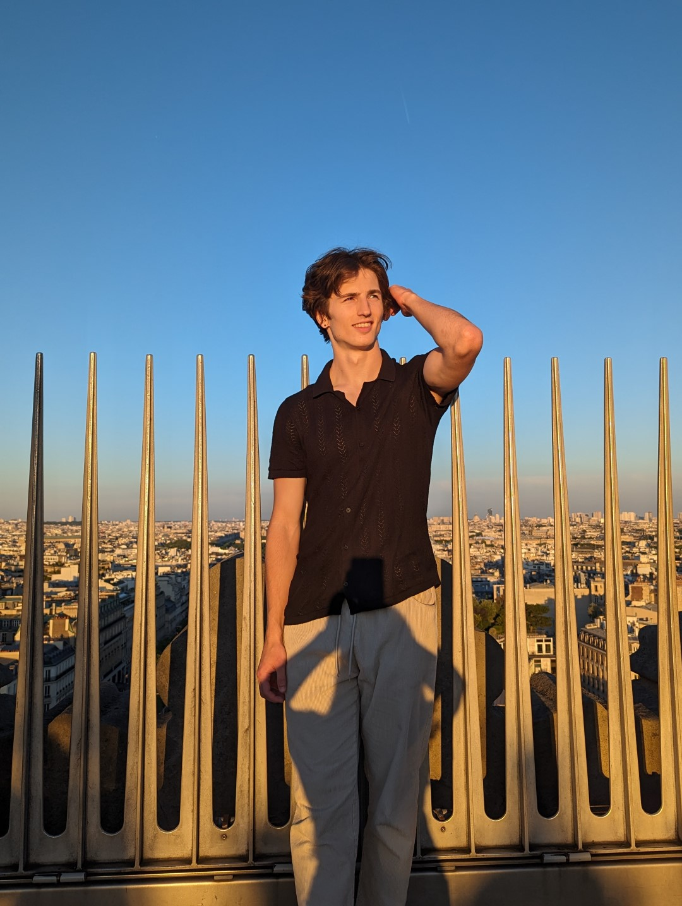

Authentic
Moments
I am a portrait and editorial photographer dedicated to helping people feel confident and look their absolute best in front of the camera. My goal isn’t just to take a picture, it’s to capture an authentic snapshot in time that you’ll be proud to share.
My technical foundation was built through years of studying light, post-processing, and visual storytelling, eventually leading me to shoot editorial work for the Rutgers University Photography Club. It was there I discovered my true focus: people. I want my subjects to feel something real when they look at their images.
Whether we're shooting a creative editorial, a professional portrait, or a brand campaign, I believe in making the process effortless so your natural character shines through.
Book a Shoot